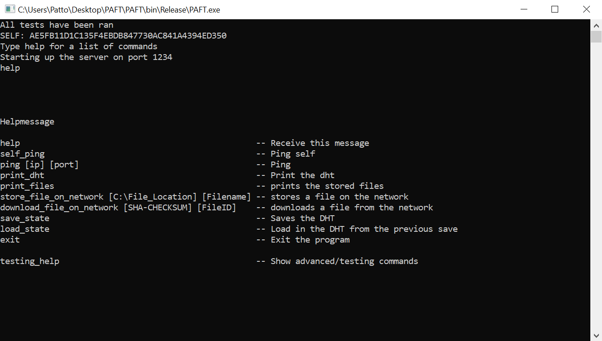

PAFT
Peer to Peer Anonymous File Transfer

- Finds peers and uses them as proxies for anonymity using onion routing
- Seperates the files into chunks to allow for partial/concurrent downloading
- Uses SHA-256 checksums to validate the integrity of chunks
- 2^160 different possible files/peers
- Logaritmic searches of peers by using a Distributed Hash Table
AD Wars
This is a top-down shooter made in godot as a group project over the course of 3 days

- Made using Godot's programming language GDScript
- Has three different levels
- Includes 2 bosses and 3 enemies
- Won Students Choice Award at Indian Hill's Byte Jam